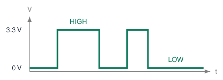
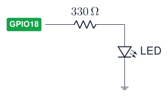
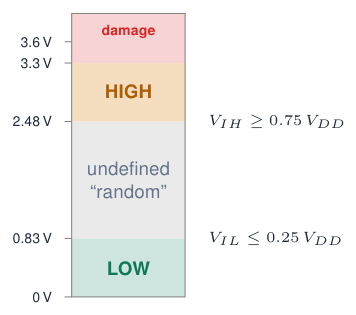
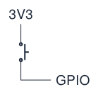
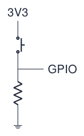
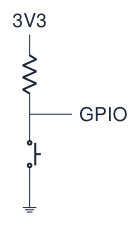
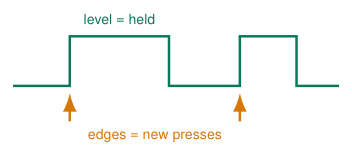
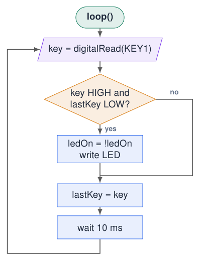
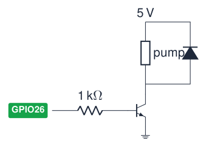

Digital Inputs and Outputs¶
Digital signals: only two values¶
-
A digital signal is either
HIGH(1, 3.3 V) orLOW(0, 0 V). -
It tells you yes or no, not how much: a button is pressed or not.
-
Three functions do almost all the work:
-
pinMode(pin, mode): configure the pin -
digitalWrite(pin, value): set an output -
digitalRead(pin): read an input

Digital vs analog
Analog: any voltage between 0 and 3.3 V (next chapters). Digital: we only care whether it is low or high.
Sources: Embedded Programming, lectures 1–6
pinMode(): configure before use¶
Where?
Call pinMode() once in setup() for every pin you use.
GPIO 34–39
Input only, no internal pull-up or pull-down: INPUT_PULLUP silently does nothing.
Sources: Arduino Language Reference; ESP-IDF Programming Guide: GPIO & RTC GPIO (ESP32)
digitalWrite(): switching an output¶
// Version 1: magic numbers
void setup() {
pinMode(23, OUTPUT);
digitalWrite(23, HIGH);
}
void loop() {}
// Version 2: a named constant
const int LED_BLUE = 23;
void setup() {
pinMode(LED_BLUE, OUTPUT); // pin as output
digitalWrite(LED_BLUE, HIGH); // 3.3 V: LED on
}
void loop() {}
-
HIGHputs 3.3 V on the pin; current flows through resistor and LED to GND. -
LOWputs 0 V on the pin: no current, LED off. -
Both versions do the same, but version 2 is readable and changing the pin means one edit.
Rule
No “magic numbers” in your code: give every pin and every setting a const with a meaningful name.
Sources: Embedded Programming, lectures 1–6
Blink: digital output¶
const int LED_PIN = 2; // on-board LED
void setup() {
pinMode(LED_PIN, OUTPUT);
}
void loop() {
digitalWrite(LED_PIN, HIGH);
delay(500); // waits: nothing else runs
digitalWrite(LED_PIN, LOW);
delay(500);
}
External LED

-
\(R = (3.3 - V_F)/I \approx (3.3-2.0)/4\,\text{mA} \approx 330\,\Omega\).
-
Pins use the GPIO number, not the label “D2”.
-
During
delay(), your sketch waits before executing its next statement.
Example: all four LEDs of the course board¶
const int LED_BLUE = 23;
const int LED_GREEN = 22;
const int LED_RED = 21;
const int LED_ORANGE = 4;
void setup() {
pinMode(LED_BLUE, OUTPUT);
pinMode(LED_GREEN, OUTPUT);
pinMode(LED_RED, OUTPUT);
pinMode(LED_ORANGE, OUTPUT);
}
void loop() {
digitalWrite(LED_BLUE, HIGH); delay(200);
digitalWrite(LED_GREEN, HIGH); delay(200);
digitalWrite(LED_RED, HIGH); delay(200);
digitalWrite(LED_ORANGE, HIGH); delay(200);
digitalWrite(LED_BLUE, LOW);
digitalWrite(LED_GREEN, LOW);
digitalWrite(LED_RED, LOW);
digitalWrite(LED_ORANGE, LOW);
delay(500);
}
-
The LEDs light up one by one, then all switch off together.
-
It works, but notice the repetition: 4 almost identical lines, three times.
-
In the chapters Functions and Loops and Arrays we will shrink this to a few lines.
Try
Change the order, or the delays, to make a “Knight Rider” effect.
digitalRead(): what counts as HIGH or LOW?¶

-
digitalRead(pin)returnsHIGHorLOW: yes or no, not how much. -
Store the result:
bool pressed = digitalRead(34); -
Between the thresholds the result is undefined: it may flip randomly.
-
Lecture rule of thumb: LOW \(\leq\) 0.8 V, HIGH \(\geq\) 2.4 V.
5 V signals
Reduce them to \(\approx\) 3.3 V or less before they reach a GPIO (voltage divider, level shifter).
Sources: ESP32 Series Datasheet; Embedded Programming, lectures 1–6
Floating inputs and pull resistors¶
Try simulation: Pull-up / pull-down
Floating

Open button: the pin is connected to nothing. It picks up noise \(\Rightarrow\) random readings.
Pull-down

Resistor to GND: released = LOW, pressed = HIGH. Course board.
Pull-up

Resistor to 3.3 V: released = HIGH, pressed = LOW (“active low”).
Why a resistor and not a wire?
When the button is pressed, the resistor limits the current from 3.3 V to GND to a few μA–mA instead of a short circuit. Typical values: 3.3–47 k\(\Omega\).
External pull resistor? Configure the pin as INPUT¶
The resistor already does the job in hardware
An external pull-up or pull-down already sets the released level. Use pinMode(BUTTON, INPUT); to configure the input; no internal pull needs to be enabled.
* Only on GPIOs that support internal pull resistors.
INPUT does not disconnect an external resistor
It disables internal pulls, leaving the external resistor connected. With no pull resistor, an open button leaves the high-impedance input floating.
Course board: KEY1 and KEY2
GPIO34/35 already have external pull-downs: use INPUT; pressed is HIGH. These classic ESP32 pins have no internal pull resistors.
Sources: Arduino-ESP32 GPIO modes; course-board schematic
Reading the course-board buttons¶
Try simulation: Pull-up / pull-down
const int KEY1 = 34; // active HIGH (pull-down)
const int KEY2 = 35;
const int LED_BLUE = 23;
const int LED_RED = 21;
void setup() {
Serial.begin(115200);
pinMode(KEY1, INPUT); // no internal pull on 34/35
pinMode(KEY2, INPUT);
pinMode(LED_BLUE, OUTPUT);
pinMode(LED_RED, OUTPUT);
}
void loop() {
bool key1 = digitalRead(KEY1); // true = pressed
bool key2 = digitalRead(KEY2);
digitalWrite(LED_BLUE, key1); // LED follows button
digitalWrite(LED_RED, key2);
Serial.printf("KEY1=%d KEY2=%d\n", key1, key2);
delay(100);
}
-
Each LED follows its button: pressed = on.
-
digitalRead()returnsHIGH/LOW, which equalstrue/false: you can store it in abool. -
The Serial Monitor shows the raw state: the first test for any input.
Breadboard version
Button to GND on GPIO25, with no external pull-up? Use INPUT_PULLUP; pressed = LOW. If an external pull-up is already fitted, use INPUT instead.
Level vs edge: toggling an LED¶
Try simulation: Button debouncing
const int KEY1 = 34;
const int LED_GREEN = 22;
bool ledOn = false;
bool lastKey = LOW;
void setup() {
pinMode(KEY1, INPUT);
pinMode(LED_GREEN, OUTPUT);
}
void loop() {
bool key = digitalRead(KEY1);
if (key == HIGH && lastKey == LOW) { // rising edge
ledOn = !ledOn; // toggle
digitalWrite(LED_GREEN, ledOn);
}
lastKey = key; // remember
delay(10);
}

-
Level: “is the button pressed now?”
-
Edge: “did it become pressed since last time?”
-
Compare the current reading with the previous one, stored in a variable.
-
!ledOninverts abool.
Sources: Arduino Language Reference
Flowchart: edge detection (toggle)¶
Try simulation: Arduino to flowchart

-
The decision compares now with last time: only a change from LOW to HIGH (an edge) toggles the LED.
-
lastKey = keyis executed on both paths: the program must always remember the latest state. -
Holding the button does nothing more: the condition is only true once per press.
Driving bigger loads: use a transistor¶

-
A GPIO can deliver only \(\approx\) 12–20 mA at 3.3 V.
-
Motors, pumps, relays and LED strips need more current and often 5–12 V.
-
The GPIO switches a transistor (or MOSFET), which switches the load.
-
Inductive loads (motor, relay coil) need a flyback diode across them.
-
Common ground between ESP32 and load supply.
Easy option
Ready-made relay or MOSFET modules contain transistor and diode.
Quiz: digital I/O¶
-
You forgot
pinMode(23, OUTPUT). What happens withdigitalWrite(23, HIGH)?Check your answer
The pin stays an input; at best the LED glows very faintly. Always configure the mode.
-
A button on GPIO35 (to GND, no resistor) gives random values. Why?
Check your answer
GPIO35 has no internal pull-up and nothing pulls it HIGH: the input floats.
-
With
INPUT_PULLUP, what does a pressed button read?Check your answer
LOW: the button connects the pin to GND. -
Your toggle program sometimes switches twice per press. Name the cause.
Check your answer
Contact bounce: one press produces several edges (see chapter Time and Interrupts).
-
Can a GPIO drive a 12 V water pump directly?
Check your answer
No: use a transistor/MOSFET or relay module and a separate supply.
Exercises: digital I/O¶
Try simulation: Traffic lights
Exercise 1 – Traffic light
Use the red, orange and green LEDs as a traffic light with realistic timing (green 5 s, orange 2 s, red 5 s).
Exercise 2 – On and off
KEY1 switches the blue LED on, KEY2 switches it off. The LED keeps its state after you release the button.
Exercise 3 – Counter
Count presses of KEY1 (edges, not levels) and print the count. Show the count in binary on the four LEDs (0–15).
Exercise 4 – Both buttons
Light the red LED only when both buttons are pressed, the green LED when exactly one is pressed.